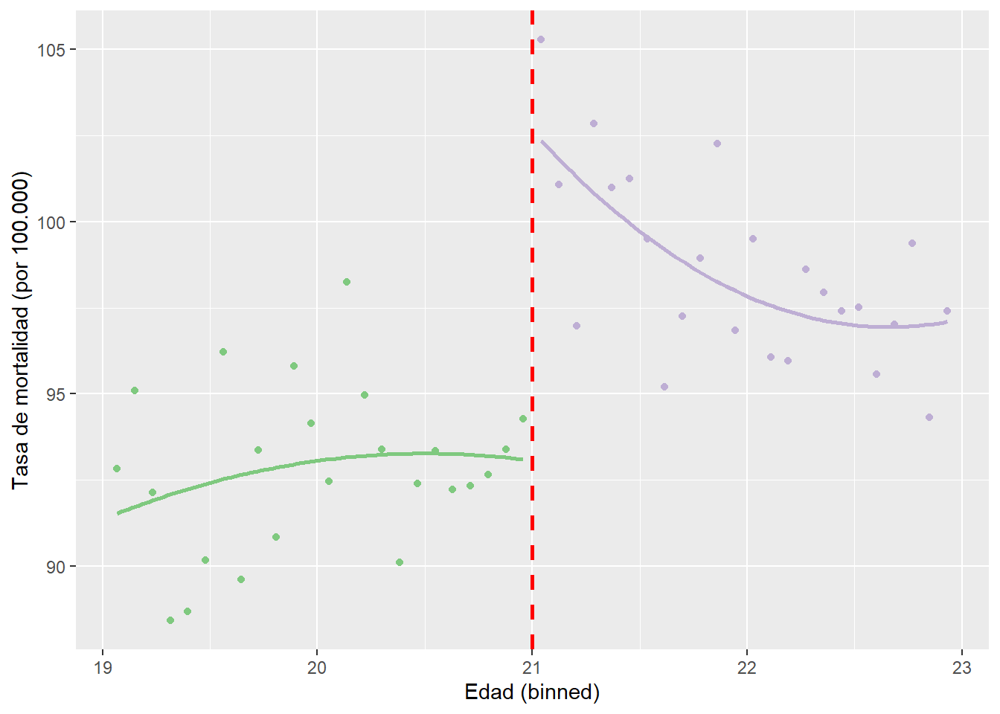

FACULTAD DE CIENCIAS SOCIALES - PUCP
Curso: SOC285 - Estadística para el análisis sociológico 2
Semestre 2025 - 1
Sin un proceso aleatorio que separe el grupo de tratamiento del de control, el efecto del tratamiento puede identificarse si la asignación al grupo de tratamiento sigue un diseño de discontinuidad de regresión (RDD). Esto requiere una variable (running) que, en un determinado umbral, separe las observaciones en un grupo de tratamiento y otro de control.
library(dplyr)##
## Attaching package: 'dplyr'## The following objects are masked from 'package:stats':
##
## filter, lag## The following objects are masked from 'package:base':
##
## intersect, setdiff, setequal, unionlibrary(ggplot2)
library(magrittr)library(rio)## Warning: package 'rio' was built under R version 4.3.1data = import("mlda.rda")Los autores buscan calcular el efecto del consumo de alcohol en la mortalidad utilizando la edad mínima para consumir alcohol en un diseño de regresión discontinua.
data %>%
ggplot(aes(x = agecell, y = all)) +
geom_point() +
geom_vline(xintercept = 21, color = "red", size = 1, linetype = "dashed") +
annotate("text", x = 20.4, y = 105, label = "Mínima Edad para Tomar",
size=4) +
labs(y = "Tasa de mortalidad (por 100.000)",
x = "Edad (binned)")## Warning: Using `size` aesthetic for lines was deprecated in ggplot2 3.4.0.
## ℹ Please use `linewidth` instead.
## This warning is displayed once every 8 hours.
## Call `lifecycle::last_lifecycle_warnings()` to see where this warning was
## generated.## Warning: Removed 2 rows containing missing values (`geom_point()`).En primer lugar, tenemos que calcular una variable dummy (umbral/threshold) que indique si una persona está por debajo o por encima del umbral. La variable dummy es igual a cero para las observaciones por debajo e igual a uno para las observaciones por encima del umbral de 21 años. A continuación, se especifa un modelo lineal con la función lm() para hacer una regresión de todas las muertes por 100.000 (all) en la variable dummy del umbral y la edad de los encuestados, que se centra en torno al valor umbral de age (21 años). Esto se hace con la función I() restando el umbral de cada tramo de edad.
lm_misma_pendiente <- data %>%
mutate(threshold = ifelse(agecell >= 21, 1, 0)) %$%
lm(all ~ threshold + I(agecell - 21))
summary(lm_misma_pendiente) ##
## Call:
## lm(formula = all ~ threshold + I(agecell - 21))
##
## Residuals:
## Min 1Q Median 3Q Max
## -5.0559 -1.8483 0.1149 1.4909 5.8043
##
## Coefficients:
## Estimate Std. Error t value Pr(>|t|)
## (Intercept) 91.8414 0.8050 114.083 < 2e-16 ***
## threshold 7.6627 1.4403 5.320 3.15e-06 ***
## I(agecell - 21) -0.9747 0.6325 -1.541 0.13
## ---
## Signif. codes: 0 '***' 0.001 '**' 0.01 '*' 0.05 '.' 0.1 ' ' 1
##
## Residual standard error: 2.493 on 45 degrees of freedom
## (2 observations deleted due to missingness)
## Multiple R-squared: 0.5946, Adjusted R-squared: 0.5765
## F-statistic: 32.99 on 2 and 45 DF, p-value: 1.508e-09El coeficiente de la variable ficticia umbral es el efecto medio del tratamiento. En promedio, la tasa de mortalidad por 100.000 de las personas que alcanzan la edad mínima para consumir alcohol es 7,66 puntos superior.
data %>%
select(agecell, all) %>%
mutate(threshold = as.factor(ifelse(agecell >= 21, 1, 0))) %>%
ggplot(aes(x = agecell, y = all)) +
geom_point(aes(color = threshold)) +
geom_smooth(method = "lm", se = FALSE) +
scale_color_brewer(palette = "Accent") +
guides(color = FALSE) +
geom_vline(xintercept = 21, color = "red",
size = 1, linetype = "dashed") +
labs(y = "Tasa de mortalidad (por 100.000)",
x = "Edad (binned)")## Warning: The `<scale>` argument of `guides()` cannot be `FALSE`. Use "none" instead as
## of ggplot2 3.3.4.
## This warning is displayed once every 8 hours.
## Call `lifecycle::last_lifecycle_warnings()` to see where this warning was
## generated.## `geom_smooth()` using formula = 'y ~ x'## Warning: Removed 2 rows containing non-finite values (`stat_smooth()`).## Warning: Removed 2 rows containing missing values (`geom_point()`).lm_diferente_pendiente <- data %>%
mutate(threshold = ifelse(agecell >= 21, 1, 0)) %$%
lm(all ~ threshold + I(agecell - 21) + threshold:I(agecell - 21))
summary(lm_diferente_pendiente)##
## Call:
## lm(formula = all ~ threshold + I(agecell - 21) + threshold:I(agecell -
## 21))
##
## Residuals:
## Min 1Q Median 3Q Max
## -4.368 -1.787 0.117 1.108 5.341
##
## Coefficients:
## Estimate Std. Error t value Pr(>|t|)
## (Intercept) 93.6184 0.9325 100.399 < 2e-16 ***
## threshold 7.6627 1.3187 5.811 6.4e-07 ***
## I(agecell - 21) 0.8270 0.8189 1.010 0.31809
## threshold:I(agecell - 21) -3.6034 1.1581 -3.111 0.00327 **
## ---
## Signif. codes: 0 '***' 0.001 '**' 0.01 '*' 0.05 '.' 0.1 ' ' 1
##
## Residual standard error: 2.283 on 44 degrees of freedom
## (2 observations deleted due to missingness)
## Multiple R-squared: 0.6677, Adjusted R-squared: 0.645
## F-statistic: 29.47 on 3 and 44 DF, p-value: 1.325e-10Este enfoque no altera la interpretación del efecto del tratamiento. En promedio, la tasa de mortalidad por 100.000 de las personas que alcanzan la edad mínima para consumir alcohol es 7,66 puntos superior.
data %>%
select(agecell, all) %>%
mutate(threshold = as.factor(ifelse(agecell >= 21, 1, 0))) %>%
ggplot(aes(x = agecell, y = all, color = threshold)) +
geom_point() +
geom_smooth(method = "lm", se = FALSE) +
scale_color_brewer(palette = "Accent") +
guides(color = FALSE) +
geom_vline(xintercept = 21, color = "red",
size = 1, linetype = "dashed") +
labs(y = "Tasa de mortalidad (por 100.000)",
x = "Edad (binned)")## `geom_smooth()` using formula = 'y ~ x'## Warning: Removed 2 rows containing non-finite values (`stat_smooth()`).## Warning: Removed 2 rows containing missing values (`geom_point()`).lm_cuadratica <- data %>%
mutate(threshold = ifelse(agecell >= 21, 1, 0)) %$%
lm(all ~ threshold + I(agecell - 21) + I((agecell -21)^2) + threshold:I(agecell - 21) +
threshold:I((agecell - 21)^2))
summary(lm_cuadratica)##
## Call:
## lm(formula = all ~ threshold + I(agecell - 21) + I((agecell -
## 21)^2) + threshold:I(agecell - 21) + threshold:I((agecell -
## 21)^2))
##
## Residuals:
## Min 1Q Median 3Q Max
## -4.3343 -1.3946 0.1849 1.2848 5.0817
##
## Coefficients:
## Estimate Std. Error t value Pr(>|t|)
## (Intercept) 93.0729 1.4038 66.301 < 2e-16 ***
## threshold 9.5478 1.9853 4.809 1.97e-05 ***
## I(agecell - 21) -0.8306 3.2901 -0.252 0.802
## I((agecell - 21)^2) -0.8403 1.6153 -0.520 0.606
## threshold:I(agecell - 21) -6.0170 4.6529 -1.293 0.203
## threshold:I((agecell - 21)^2) 2.9042 2.2843 1.271 0.211
## ---
## Signif. codes: 0 '***' 0.001 '**' 0.01 '*' 0.05 '.' 0.1 ' ' 1
##
## Residual standard error: 2.285 on 42 degrees of freedom
## (2 observations deleted due to missingness)
## Multiple R-squared: 0.6821, Adjusted R-squared: 0.6442
## F-statistic: 18.02 on 5 and 42 DF, p-value: 1.624e-09data %>%
select(agecell, all) %>%
mutate(threshold = as.factor(ifelse(agecell >= 21, 1, 0))) %>%
ggplot(aes(x = agecell, y = all, color = threshold)) +
geom_point() +
geom_smooth(method = "lm",
formula = y ~ x + I(x ^ 2),
se = FALSE) +
scale_color_brewer(palette = "Accent") +
guides(color = FALSE) +
geom_vline(xintercept = 21, color = "red",
size = 1, linetype = "dashed") +
labs(y = "Tasa de mortalidad (por 100.000)",
x = "Edad (binned)")## Warning: Removed 2 rows containing non-finite values (`stat_smooth()`).## Warning: Removed 2 rows containing missing values (`geom_point()`).
y=β 0 +β 1 D+β 2 x+β 3 x 2 +β 4 x right +β 5 x right 2 +ϵ
D: Tratamiento (1 si x ≥ 21).
x: Variable de asignación (centrada en 21: x = agecell - 21).
x^2: Término cuadrático del lado izquierdo
x_right: interacción entre x y el tratamiento.
x^2_right: término cuadrático interactivo.